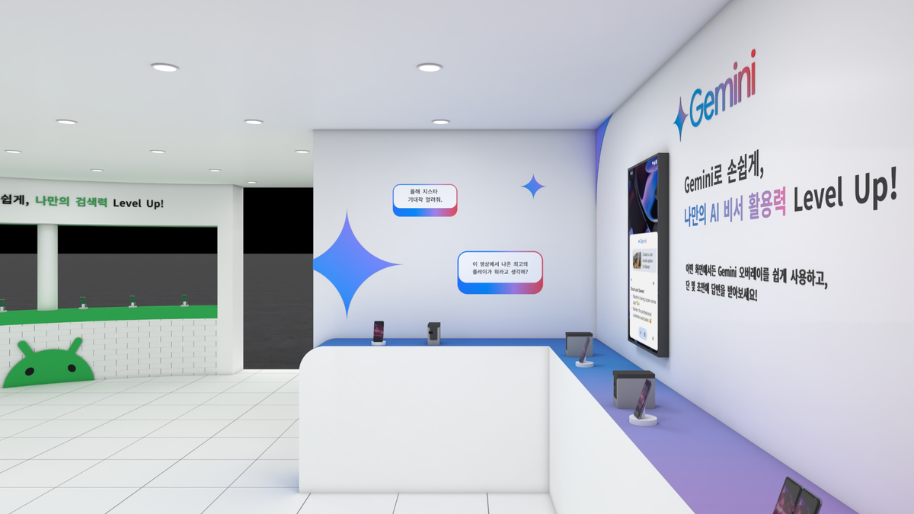
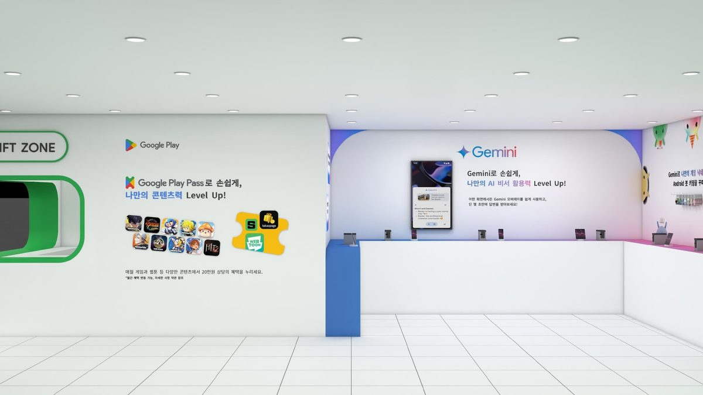
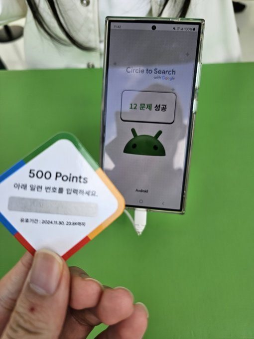

Android at G-STAR
Decision questionWhich Android AI use cases should a booth show, and why would a gamer choose it over the biggest game brands?
Result +17pp purchase intent among non-Android users (OKR target was +13pp), and 2× visitors year over year.

Visitor behavior loop
“Any generous booth recs?”
Gamers scan community posts the night before, ranking booths by the rewards they give out and the queue speed others reported.
“How’s the queue right now?”
On site, visitors check real-time queue posts and redesign their route on the fly, skipping booths with long waits.
“Day 2 loot list”
After the visit, gamers post reviews and loot lists that become the planning data for tomorrow's visitors.
What gamers ranked
Priority score out of 5 = 0.6 × likelihood of use + 0.4 × brand consideration. Only use cases that cleared the baseline on both metrics went into the booth.
- Search items shown in gaming content4.78
- Translate Japanese webtoons4.28
- Translate foreign gaming memes on X3.44
- Search the name of a new mobile game3.36
- Search an image of a game character3.26
below baseline, left out
- Sound-search a game’s background music2.00
- Search snacks to have while playing1.84
- Search for game items while playing1.74


How the booth was built
- Audience insight
-
I interviewed 10 heavy mobile gamers (non-Android users, 18 to 35) in person and showed Android AI features as GIF simulations. The team expected demand for Circle to Search during gameplay. That was wrong. Over 70% wanted it to find items in gaming content, and over 50% wanted it to translate Japanese webtoons. Gamers wanted help across everything they watch and read around games.
To learn why people visit at all, I wrote a Python crawler to analyze 4,646 posts from the prior year’s G-STAR board on the largest gamer community. I designed a five-category keyword taxonomy—rewards, visit motivation, booth experience, brand mentions and negative reactions—and ran automated classification across every post. “queue” dominated at 358 mentions: visitors planned their routes by queue speed and reward value. Only 0.7% of posts were negative. I also ran a 75-person survey in the same community. That community skews toward heavy fans, so I read the numbers as direction, not as the share of all visitors. 53% came mainly for real rewards.
- Fastest test
-
I had one week for research, so I picked the quickest method for each question. GIF simulations stood in for real builds, and an automated crawler I wrote stood in for on-site observation—I analyzed the prior year’s community data instead of waiting for live posts. A use case had to clear a baseline on both purchase-consideration uplift and relevance to make the final list.
- What changed
-
I dropped the in-game demo and built the booth around the top-ranked use cases, shown early so every visitor met them. Google Play Points became the headline reward, because gamers value them like cash. I coordinated the agency to design the booth structure and contents, shifting to goal-oriented communication when I saw they needed clearer briefs. With the design team I simulated layouts to speed up turnover. The OKR target was +13pp consideration uplift—the booth delivered +17pp.
- Delight moment
-
A three-player Circle to Search speed game. Players solve real gamer problems with the feature, then win rewards that scale with their rank. Gamers got competition and a payoff, and learned Android AI along the way.
- Online extension
-
Not everyone could get to the venue, so I also built a mini-site for Google Play Points Platinum and Diamond members who could not visit G-STAR (Nov 14 to 17). Members hunted for hidden treasure-map pieces in a video, entered them to complete a map, and could win Play Points, gaming gear, a Play Pass subscription or an on-site gift. The mini-site reached more users than the offline booth, but it lifted brand consideration less. The trade-off was reach online against depth in person.
- What I would do next
-
The social listening came from one community, the sample was small, and watching a GIF is not the same as using the phone. I would pilot the ranking on real devices to cross-check it.
- +17pppurchase intent among non-Android users
- 2×visitors year over year